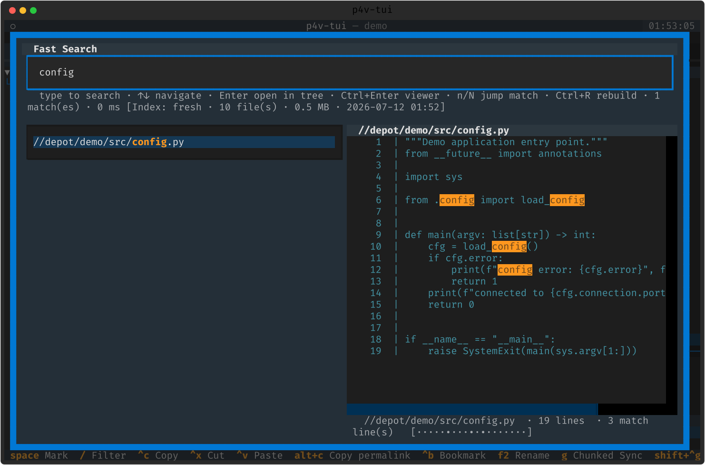
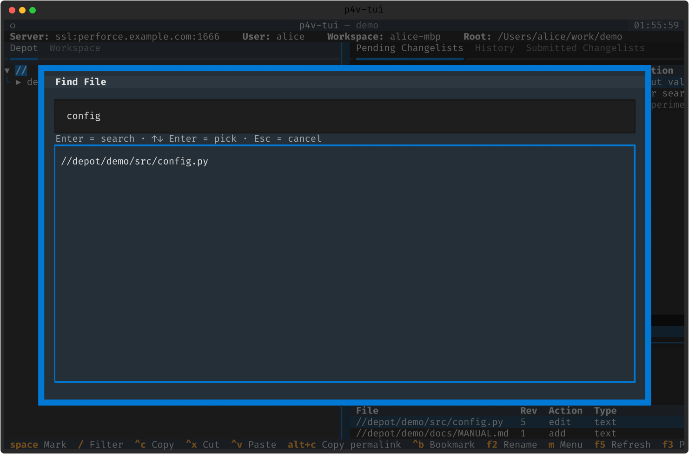
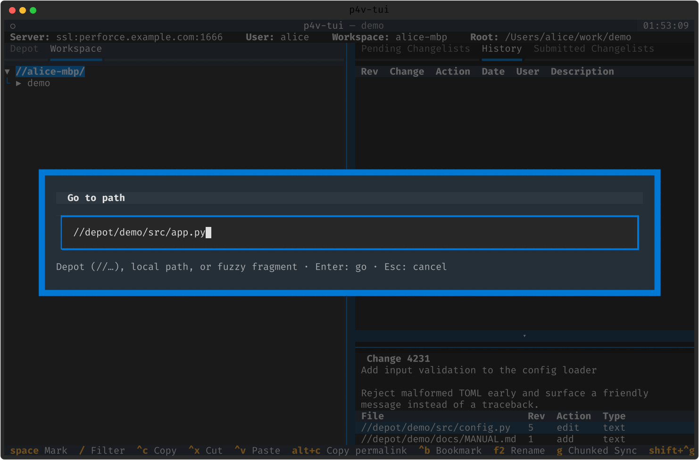
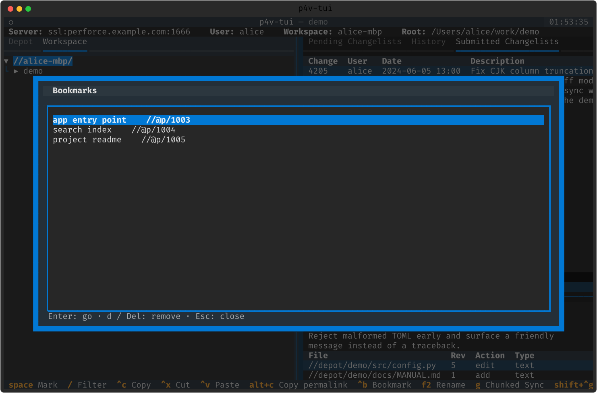

검색 · 이동
원하는 파일을 즉시 찾고, 어디로든 점프합니다. Fast Search · Find File · Go-to-path · 퍼머링크 · 북마크.
Fast Search — Ctrl+F
로컬 SQLite 인덱스로 타이핑하는 즉시 파일명을 찾습니다. 미리보기 + 매치 하이라이트, UI 스레드 밖에서 쿼리, IME 친화 디바운스. 인덱스는 (서버, 클라이언트)별로 백그라운드에서 증분 재구축됩니다.
- 느슨한 매칭 사다리 ➕ — 부분 문자열 → 토큰 AND(foo bar 가 foo_bar·foo/bar/baz 매치) → Levenshtein ≤2 "이거 찾으셨나요".
- ?쿼리 내용 grep(p4 grep) · cl:쿼리 설명 검색 · @user:/type://regex/ 필터 · nl: 자연어.
- 결과 상한 토글(Ctrl+Shift+L) · 매치 미니맵 · 쿼리 이력(Ctrl+P/Ctrl+N) · 행 액션(d 디프 · g get · Ctrl+Enter 뷰어).

Find File · Go-to-path
Find File(Ctrl+Shift+F)은 디팟 전역 서버 검색 (p4 files -m 100)이며, 고른 파일로 트리를 자동 이동합니다 (매핑되면 Workspace, 아니면 Depot).
Go-to-path(Ctrl+G) ➕ — 디팟(//…) · 로컬 · 퍼머링크(//@p/N) 경로를 붙여넣으면 트리가 이동·강조합니다. 같은 느슨함+Levenshtein 사다리를 씁니다(후보 1개면 점프, 여럿이면 피커, 0 이면 제안).


퍼머링크 · 북마크
불변 퍼머링크(Alt+C) ➕ — 이동/이름변경 히스토리를 따라 현재 경로로 해석되는 안정 주소(//@p/<id>). Ctrl+Shift+V 로 마지막 복사 퍼머링크로 점프.
북마크(Ctrl+B 추가 / Ctrl+Shift+B 피커) ➕ — 퍼머링크 기반이라 경로가 옮겨져도 살아남습니다.
